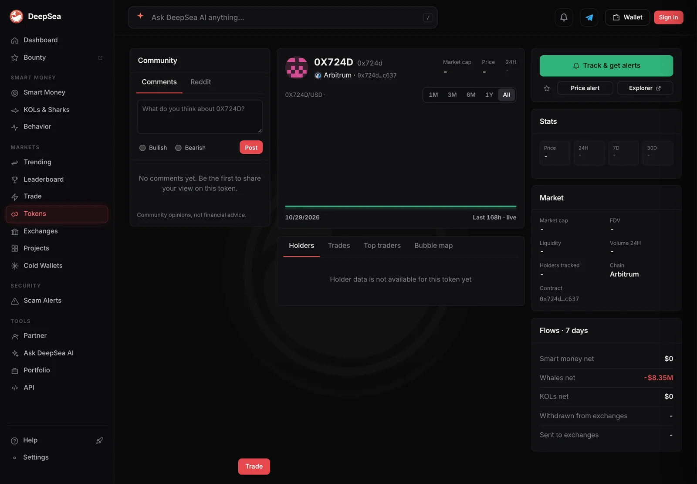
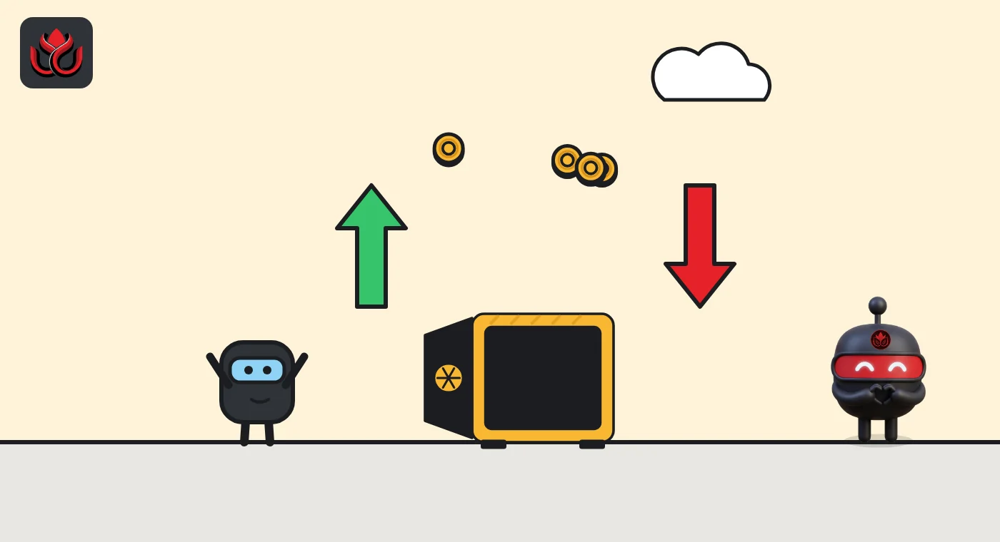

Two sharks ran $51.7 million through Aave's USDC pool on Arbitrum. Net $8.35 million out
DeepSea's 24-hour feed shows $30 million of Aave's USDC receipt token sold and $21.65 million bought. One wallet did most of the round trip.
Key points
- Two shark wallets sold $30.0 million of aArbUSDCn and bought $21.65 million in five trades over 24 hours, DeepSea showed at 6:36 a.m. ET on November 5, 2026.
- The net, about $8.35 million, is USDC that left Aave's Arbitrum market or changed hands. DeepSea does not show where it went.
- One wallet put in $20 million and took out $20 million. The other sold $10 million and bought back $1.65 million.
 What DeepSea's data shows
What DeepSea's data shows
DeepSea's live feed totals trades by wallets it tags as sharks (large, active traders) over the last 24 hours. At 6:36 a.m. ET on November 5, 2026, the biggest item on its selling list was aArbUSDCn on Arbitrum: $29,999,999 sold and $21,653,587 bought, by 2 wallets in 5 trades.
DeepSea's wallet list splits it cleanly. The wallet ending 6e36 bought $20,000,000 and sold $19,999,999 in 3 trades, a near-perfect round trip. The wallet ending c060 sold $10,000,000 and bought $1,653,587 in 2 trades. That second wallet is where the net $8.35 million outflow comes from. DeepSea gives no name for either wallet.
The same aggregate appeared in DeepSea's 12:38 a.m. ET reading, so these trades happened before then. DeepSea's token page for this contract, which it lists without a name, showed a 7-day whale net flow of minus $8.35 million, matching the net.

Data: DeepSea (desea.io), checked November 5, 2026, 6:36 a.m. ET.
What is aArbUSDCn?
Aave is a lending app: people deposit coins to earn interest, and others borrow them. When you deposit, Aave gives you an aToken as a receipt. Aave's developer docs say aTokens are minted on supply and burned on withdraw, and are pegged 1:1 to the deposited asset. Interest is paid by making your aToken balance grow.
aArbUSDCn is the receipt for native USDC (Circle's dollar token) deposited in Aave on Arbitrum. So $1 of aArbUSDCn stands for $1 of USDC in the pool. When DeepSea logs a sale, the holder either withdrew the USDC or swapped the receipt to someone else.
The numbers
Gross flow was about $51.65 million, the largest token total on DeepSea's 24-hour shark lists for the chains in this feed. Next on the selling list were USD₮0 on Optimism ($7.10 million sold, $4.89 million bought) and USD₮0 on Berachain ($9.52 million sold, $7.78 million bought).
The wallet ending 6e36 is not new to this feed. On November 4 we reported a single $10 million aArbUSDCn sale with no buying, and DeepSea's data that day tied it to the same wallet.
aArbUSDCn trades by shark wallet, 24 hours
US$ million
24 hours to November 5, 2026, 6:36 a.m. ET. Source: DeepSea live feed.

Why it matters
Large deposits and withdrawals change how much USDC is free to borrow in a pool, and with it the interest rate. Round numbers like $10 million and $20 million suggest treasury-style moves rather than trading, but DeepSea's data does not show intent.
LC Insight analysis
This section is our reading of the facts above, not a statement of fact.
- We think the $20 million round trip is noise: money in, money out. The $8.35 million net from the second wallet is the real change.
- Two days of $10 million moves around the same Aave market point to a wallet managing large dollar balances on Arbitrum, not to a panic exit.
- Without the next hop, nobody can say whether this USDC went to an exchange, another lender or cold storage.
What's next
- Whether the wallets ending 6e36 or c060 move again
- Where the withdrawn USDC shows up next
- USDC borrow rates in Aave's Arbitrum market
Disclaimer. This article is based on public information and the sources listed below as of the update time shown. It is for information only and is not investment, legal or tax advice. Figures may change as companies and authorities publish new data.